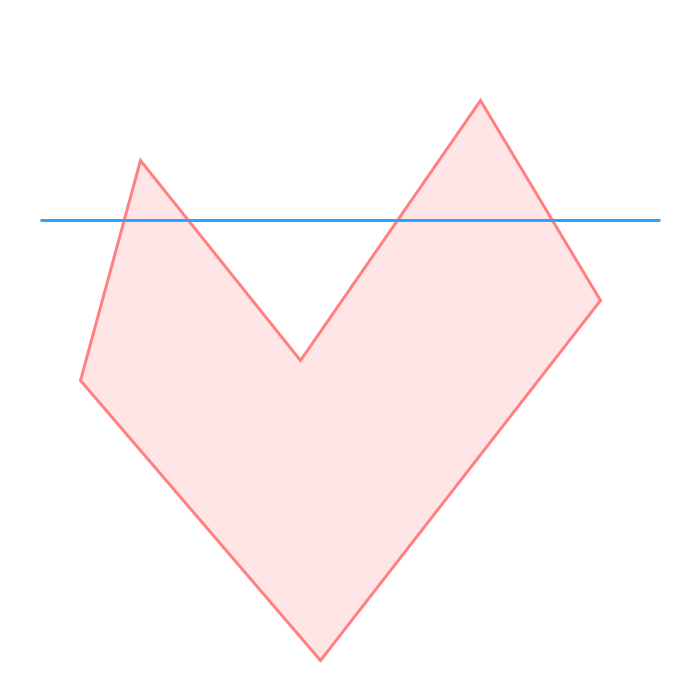
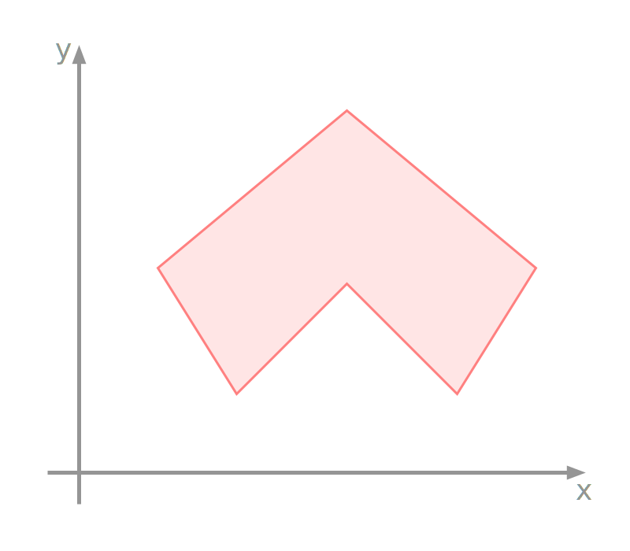
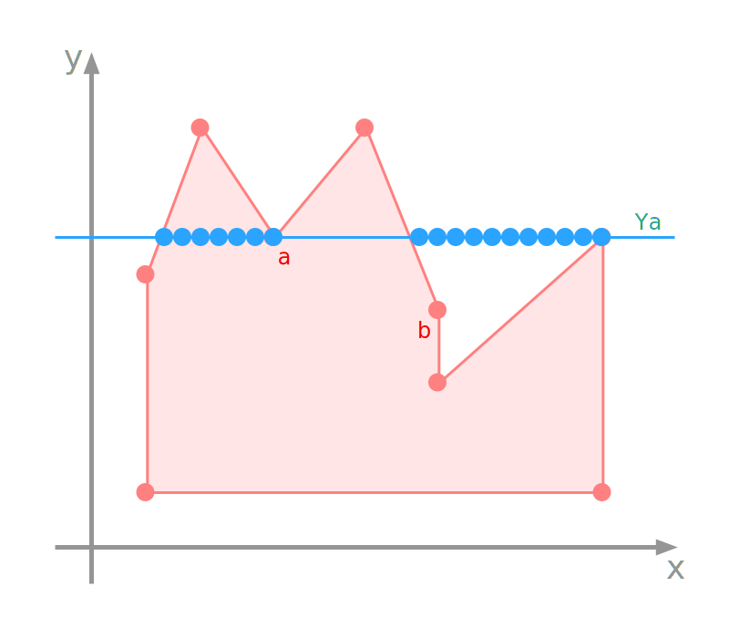
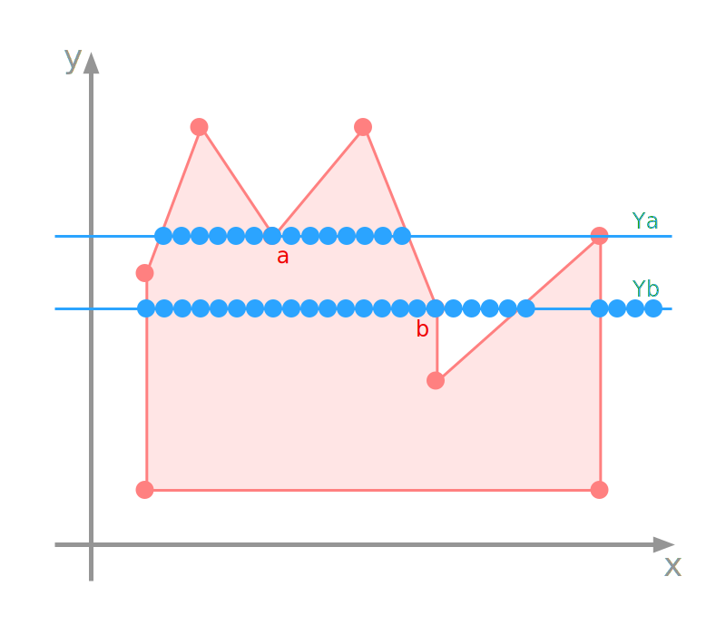
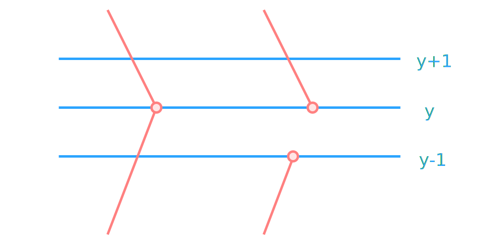

Identify pixels that belong to the interior of a polygon. Once identified, we can:
pass the pixel to the rasteriser
assign colour to the pixel
assign a depth value to the pixel
sample a texture for the pixel
Polygon Filling
A polygon is a set of vertices that are connected by edges.
We need efficient algorithms to fill polygons.
We can extend ideas from line drawing to polygon filling.
Not all polygons are handled equally!
Convex Polygons
convex polygon
interior angles \(\leq 180^{\circ}\)
scan lines enter the interior once and exit once
triangles are always convex
Concave Polygons
concave polygon
arbitrarily complex polygons
scan lines enter and exit many times
more difficult to fill
Scan-Line Algorithm
The scan-line algorithm must work for both convex and concave polygons.
Scan-Line Algorithm
for line in y=0 to y=height:
counter = 0
for pixel in x=0 to x=width:
if edge:
counter +=1
if counter is odd:
draw(line, pixel)
concave polygonconcave scan
Scan-Line Algorithm
The algorithm seems to work well.
Have we considered all cases?
complex polygon
scanning problem
naive algorithm wrongly fills the cavity
Enter the left edge, increment the counter and draw.
Pass through vertex \(a\), increment the counter and stop drawing.
Leave the right edge, increment the counter and draw.
Counting vertex \(a\) twice provides a solution.
Solution:
count the vertex twice
Counting vertices twice does not always work.
Problem:
Counting the vertex twice does not always work!
Difference between vertex \(a\) and \(b\).
consider the edges at each vertex
edges through vertex \(b\) are monotonic in \(y\)
Difference between vertex \(a\) and \(b\).
If we move around the polygon in a clockwise direction:
edges that enter and leave vertex a go in opposite\(y\) directions.
edges that enter and leave vertex b go in the same\(y\) direction.
edges through vertex b are monotonic in \(y\)
We can split the vertex for monotonic edges:
split vertex
The lower edge is shortened to create two new edge points.
split vertex
Scan-Line Algorithm
process vertices of monotonic edges
for line in y=0 to y=height:
counter = 0
for pixel in x=0 to x=width:
if edge or edge-point:
counter +=1
if vertex:
counter +=2
if counter is odd:
draw(line, pixel)
Scan-Line Implementation
Expanding the pseudocode.
Scan-Line Implementation
The first step is to build an array of linked lists, called a Bucket Sorted Edge Table (BSET).
Scan-Line Implementation
Each node in the linked list has 3 members related to a vertex, and a pointer to the next node:
y value of the other vertex on the edge
x value of this vertex
inverse slope of the edge
pointer to the next node
Scan-Line Implementation
To determine edge intersections it uses the familiar slope of a line: